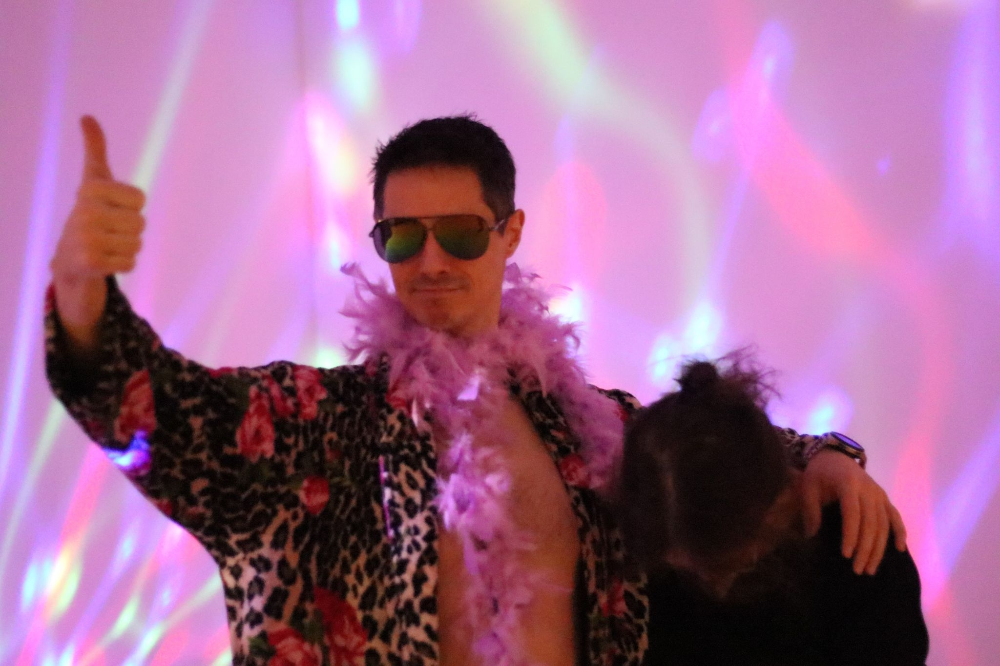

À propos
Notre école, nos professeurs et notre philosophie.
Notre engagement
Une approche personnalisée.
Chez pulsation danse, nous préparons chacun de nos cours avec soins. Nous prenons en considération les besoins de chacun de nos élèves. Notre engagement c'est de te permettre de continuer à progresser même si tu refais un niveau plusieurs fois. Nous ne suivons pas un plan de cours préétablie, nous adaptons le contenu de chaque cours aux élèves inscrit. D'une session à l'autre, tu apprendras de nouveaux mouvements, différentes techniques et tout le nécessaire pour te permettre de continuer évoluer à ton rythme.
Photo de cours ou ambiance studio à intégrer
Nos professeurs
Trois enseignants passionnés.
Gaétan Grondin

Mélanie Jean
Photo du professeur à intégrer
Loïse Désaulniers
Photo du professeur à intégrer
Et ensuite?